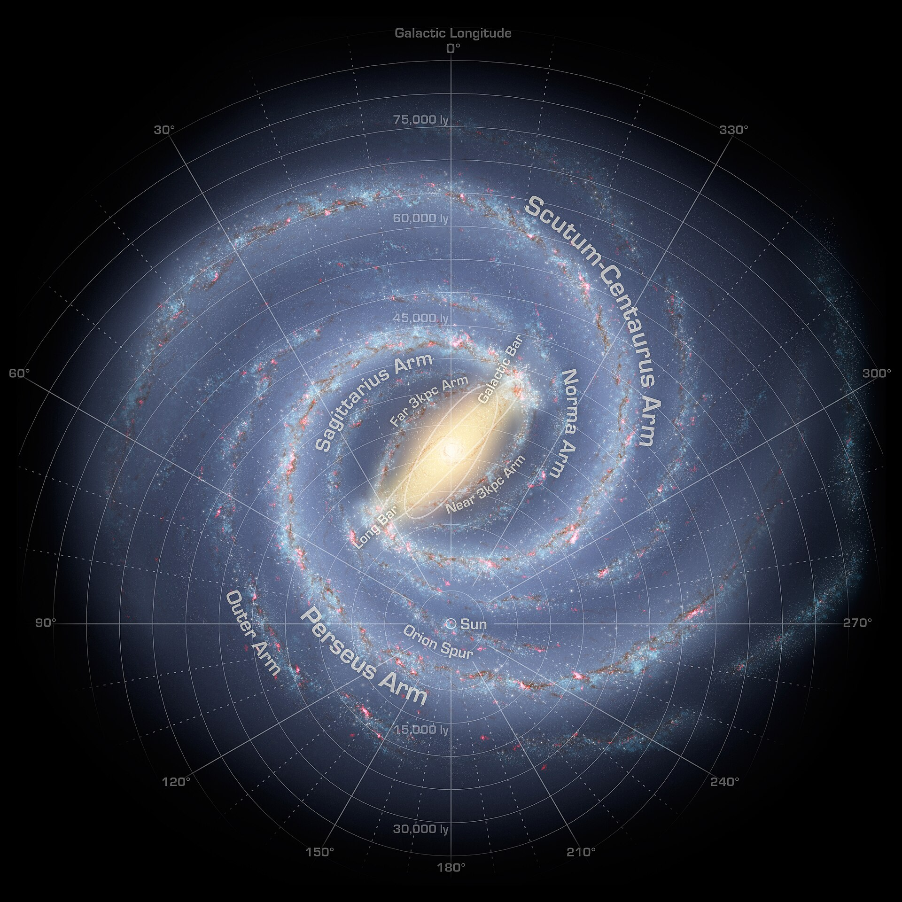
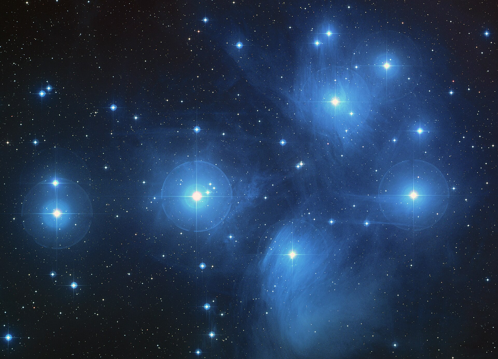
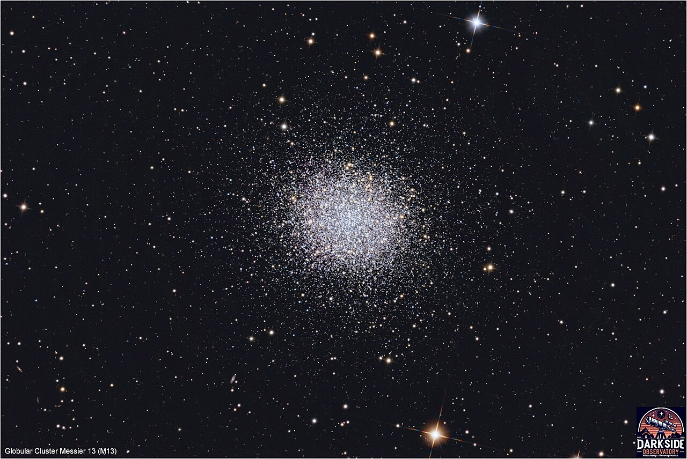
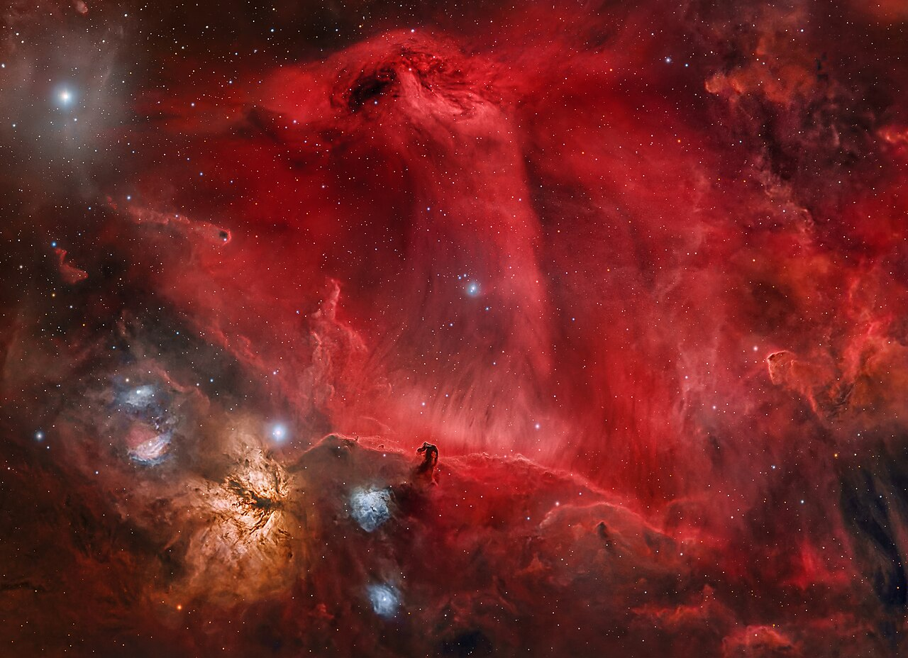
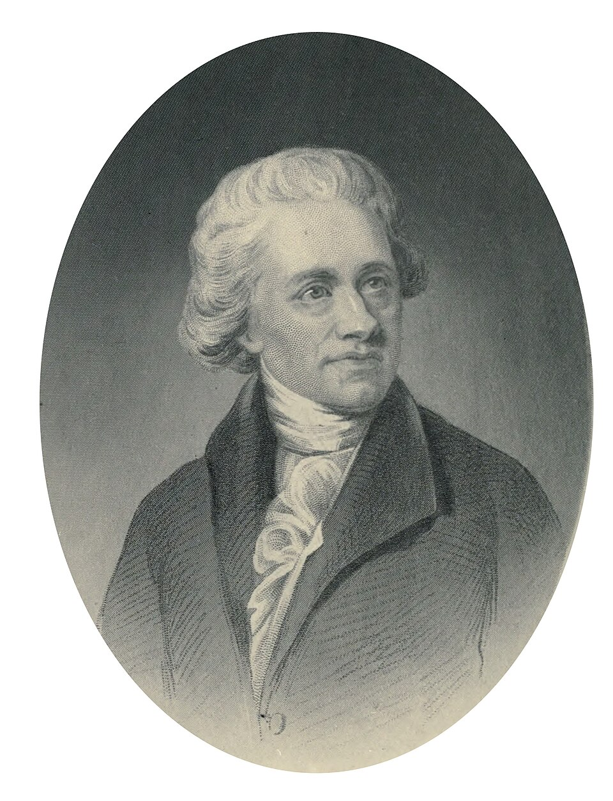
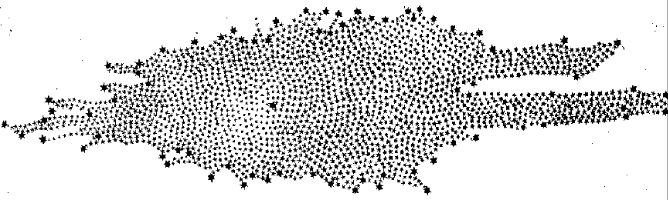

2026학년도 중학교 3학년 과학 • 지구과학 VII-1 부록
우리은하 사진 자료집
19강 부록 — 그림으로 보는 은하
성단 · 성운 · 우리은하의 구조 · 최초의 은하 지도
모든 사진은 퍼블릭 도메인 또는 크리에이티브 커먼즈 라이선스 자료다. 사진마다 저작자와 라이선스를 함께 적었고, 마지막 장에 원본 주소를 모았다.

우리은하를 밖에서 본다면
우리는 은하 안에 있어 이 그림을 직접 찍을 수 없다. 전파와 적외선 관측을 모아 그린 상상도다. 아래쪽 가운데 Sun 표시가 태양계 — 중심에서 약 9천 pc, 한참 바깥의 나선팔 곁이다. 그림의 동심원은 광년(ly) 눈금이니 3.26으로 나누어 pc로 읽자 — 45,000 ly ≈ 1.4만 pc.
NASA/JPL-Caltech/R. Hurt (SSC-Caltech) · 퍼블릭 도메인

산개 성단 — 플레이아데스(M45)
별이 엉성하게 흩어져 있고, 하나하나가 파랗다. 파란색은 표면 온도가 높다는 뜻이고(18강), 그런 별은 오래 살지 못한다 — 곧 젊은 성단이다. 나선팔에서 발견된다.
NASA, ESA, AURA/Caltech, Palomar Observatory · 퍼블릭 도메인
반사 성운 — 같은 사진, 다른 천체
앞 장과 같은 사진이다. 이번에는 별이 아니라 별 둘레의 푸른 안개를 보자. 성단이 지나가던 성간 티끌이 별빛을 반사해 보이는 것이다. 스스로 내는 빛이 아니므로 별이 사라지면 안개도 사라진다.
NASA, ESA, AURA/Caltech, Palomar Observatory · 퍼블릭 도메인

구상 성단 — M13 (헤르쿨레스자리)
수십만 개의 별이 공 모양으로 빽빽하다. 가운데는 너무 촘촘해 낱낱이 갈라지지도 않는다. 색은 대체로 누렇거나 붉다 — 온도가 낮은 늙은 별이라는 뜻이다. 원반이 아니라 은하 중심부와 그 바깥에 분포한다.
사진: Thedarksideobservatory (Wikimedia Commons) · CC BY-SA 4.0

방출 성운 — 오리온 대성운(M42)
가운데의 뜨거운 별들이 주변 가스에 에너지를 주고, 가스가 스스로 붉은빛을 낸다. 반사 성운과 달리 자기 빛이다. 여기서 지금도 새 별이 태어나고 있다 — 성운은 별의 재료다.
NASA, ESA, M. Robberto (STScI/ESA) & the Hubble Space Telescope Orion Treasury Project Team · 퍼블릭 도메인

암흑 성운 — 말머리 성운(B33)
말머리 자리에 아무것도 없는 것이 아니다. 짙은 티끌 구름이 뒤쪽의 붉은 빛을 가려 검게 보일 뿐이다. 없어서 검은 것과 가려서 검은 것을 어떻게 구별할까 — 답은 그 뒤에서 오는 빛이 붉게 새어 나오는지를 보는 것이다.
사진: Gianni Lacroce (Wikimedia Commons) · CC0 1.0
1785년 — 사람이 처음 그린 은하 지도

윌리엄 허셜(1738–1822)

허셜 남매가 하늘을 683개 구역으로 나눠 별을 일일이 세어 그린 우리은하의 단면. 가운데 조금 큰 별이 태양이다.
허셜의 지도에서 태양은 한가운데에 있다. 무엇을 몰랐기 때문에 이런 그림이 나왔을까? (힌트: 이 자료집 7쪽의 검은 구름)
초상: E. S. Holden, Sir William Herschel: His Life and Works(1881) · 지도: Herschel, 1785 — 둘 다 퍼블릭 도메인
사진 출처와 라이선스
| 쪽 | 사진 | 저작자 | 라이선스 |
|---|---|---|---|
| 2 | 우리은하 상상도 | NASA/JPL-Caltech/R. Hurt | Public domain |
| 3·4 | 플레이아데스 성단(M45) | NASA, ESA, AURA/Caltech, Palomar Observatory | Public domain |
| 5 | 구상 성단 M13 | Thedarksideobservatory | CC BY-SA 4.0 |
| 6 | 오리온 대성운(M42) | NASA, ESA, M. Robberto (STScI/ESA), HST Orion Treasury Project Team | Public domain |
| 7 | 말머리 성운(B33)·불꽃 성운 | Gianni Lacroce | CC0 1.0 |
| 8 | 윌리엄 허셜 초상 | E. S. Holden(1881) | Public domain |
| 8 | 허셜의 은하 단면도(1785) | W. & C. Herschel | Public domain |
| 19강 2쪽 | 은하수 실경 | Chad Powell | 별도 이용 허락 |
원본은 모두 Wikimedia Commons에 있고, 파일명과 원본 주소는 img/CREDITS_galaxy.json에 있다. CC BY-SA 자료를 다시 쓸 때는 같은 라이선스로 공유해야 한다. · 19강 본문으로 돌아가기